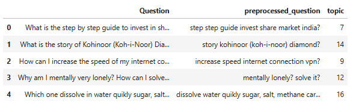
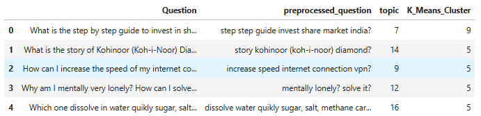
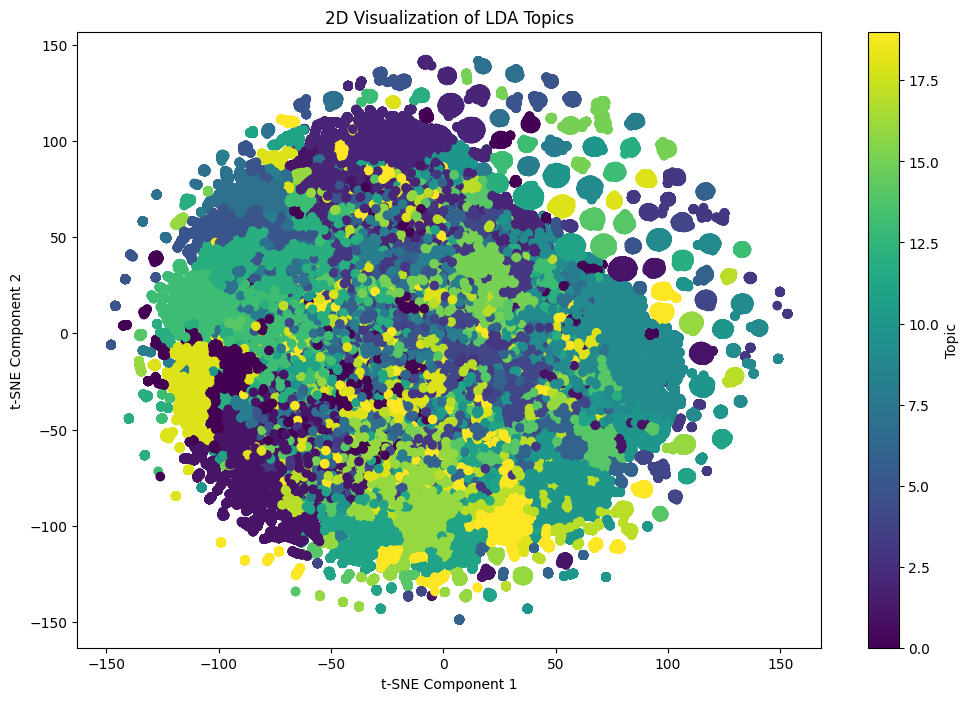

Project 2: Topic Modeling Assessment
Welcome to your Topic Modeling Assessment! For this project you will be working with a dataset of over 400,000 quora questions that have no labeled cateogry, and attempting to find 20 cateogries to assign these questions to. The .csv file of these text questions can be found underneath the Topic-Modeling folder.
Task: Import pandas and read in the quora_questions.csv file.
We could not get our twitter API to work, so we pulled our data from this website kaggle (linked here). We load our data in a json format to be processed for sentiment analysis.
!pip install nltk spacy !spacy download en_core_web_lgimport pandas as pd from sklearn.feature_extraction.text import TfidfVectorizer from sklearn.metrics.pairwise import cosine_similarity from nltk.corpus import stopwords from nltk.stem import WordNetLemmatizer from nltk import pos_tag from nltk.corpus import wordnet from nltk.util import ngrams import nltk nltk.download('wordnet') import spacy spacy.load('en_core_web_lg')df = pd.read_csv(r"train.csv") df.drop(columns = [col for col in df.columns if col!='question1'],inplace=True) df.question1 = df.question1.astype(str) df.columns = ['Question'] df.head()
Preprocessing
Task: Use TF-IDF Vectorization to create a vectorized document term matrix. You may want to explore the max_df and min_df parameters.
lemmatizer = WordNetLemmatizer() nlp = spacy.load('en_core_web_lg') stop_words = nlp.Defaults.stop_words def preprocess(text): tokens = text.split() return ' '.join([lemmatizer.lemmatize(word.lower()) for word in tokens if word.lower() not in stop_words]) df['preprocessed_question'] = df['Question'].apply(lambda text: preprocess(text))vectorizer = TfidfVectorizer(max_df = 0.90, min_df = 2, stop_words='english') X = vectorizer.fit_transform(df['preprocessed_question'].fillna(''))
Non-Negative Matrix Factorization
Task: Use Scikit-Learn to create an instance of NMF with 20 expected components. (Use random_state=42)
from sklearn.decomposition import NMF nmf = NMF(n_components=20, random_state=42) nmf.fit(X)NMF(n_components=20, random_state=42)
In a Jupyter environment, please rerun this cell to show the HTML representation or trust the notebook. On GitHub, the HTML representation is unable to render, please try loading this page with nbviewer.org.
Advanced Sentiment Analysis using Transformers
We used the transformers sentiment-analysis pipeline to conduct an advanced sentiment analysis. Using this pipeline, we did not need to clean our data, because the bert model under the pipeline comes with a custom tokenizer to account for special characters and white space. The Sentiment Analysis pipeline also takes into account stop words.
from transformers import pipeline
classifier = pipeline("sentiment-analysis")
TASK: Print out the top 15 most common words for each of the 20 topics.
words = vectorizer.get_feature_names_out() for i, component in enumerate(nmf.components_): ordered = sorted(component, reverse=True) print(f'Topic {i + 1}') top_words = [] for word_index, num in enumerate(component): if num in ordered[:15]: top_words.append(words[word_index]) print(top_words)Topic 1 ['2016', 'best', 'book', 'buy', 'company', 'friend', 'laptop', 'movie', 'movies', 'phone', 'place', 'read', 'site', 'visit', 'website'] Topic 2 ['add', 'answer', 'answered', 'ask', 'asked', 'delete', 'easily', 'google', 'improvement', 'marked', 'needing', 'post', 'question', 'quora', 'search'] Topic 3 ['black', 'earn', 'easily', 'easy', 'facebook', 'free', 'home', 'internet', 'investment', 'job', 'making', 'money', 'online', 'website', 'youtube'] Topic 4 ['balance', 'change', 'changed', 'death', 'earth', 'important', 'life', 'live', 'meaning', 'moment', 'purpose', 'real', 'thing', 'want', 'work'] Topic 5 ['2016', 'america', 'better', 'clinton', 'donald', 'election', 'happen', 'hillary', 'presidency', 'president', 'presidential', 'think', 'trump', 'vote', 'win'] Topic 6 ['culture', 'don', 'feel', 'friend', 'girl', 'guy', 'like', 'live', 'look', 'men', 'sex', 'tell', 'website', 'woman', 'work'] Topic 7 ['beginner', 'book', 'coding', 'computer', 'english', 'hacking', 'java', 'language', 'learn', 'learning', 'online', 'programming', 'python', 'start', 'want'] Topic 8 ['available', 'business', 'china', 'college', 'company', 'country', 'india', 'job', 'minister', 'olympics', 'pakistan', 'place', 'president', 'spotify', 'war'] Topic 9 ['ask', 'believe', 'blowing', 'don', 'earth', 'easily', 'flat', 'google', 'hate', 'instagram', 'mind', 'people', 'stop', 'think', 'use'] Topic 10 ['account', 'best', 'commit', 'easiest', 'easy', 'fastest', 'increase', 'instagram', 'learn', 'painless', 'quickest', 'rid', 'stop', 'suicide', 'way'] Topic 11 ['blowing', 'day', 'don', 'employee', 'going', 'happened', 'important', 'know', 'mind', 'new', 'pregnant', 'thing', 've', 'want', 'worst'] Topic 12 ['bad', 'balance', 'book', 'college', 'departments', 'differ', 'engineering', 'good', 'idea', 'job', 'position', 'read', 'song', 'website', 'work'] Topic 13 ['1000', '2000', '500', 'ban', 'banning', 'black', 'currency', 'economy', 'government', 'indian', 'modi', 'note', 'notes', 'rupee', 'think'] Topic 14 ['ability', 'communication', 'english', 'fluent', 'fluently', 'improve', 'language', 'pronunciation', 'skill', 'skills', 'speak', 'speaking', 'spoken', 'word', 'writing'] Topic 15 ['boyfriend', 'doesn', 'fall', 'forget', 'friend', 'girl', 'girlfriend', 'guy', 'know', 'love', 'man', 'mean', 'person', 'tell', 'true'] Topic 16 ['day', 'favorite', 'feel', 'home', 'job', 'long', 'machine', 'movie', 'person', 'possible', 'sex', 'spend', 'time', 'travel', 'visitor'] Topic 17 ['belly', 'diet', 'exercise', 'fast', 'fat', 'gain', 'healthy', 'help', 'lose', 'loss', 'month', 'pound', 'quickly', 'reduce', 'weight'] Topic 18 ['account', 'chinese', 'computer', 'culture', 'data', 'difference', 'engineering', 'java', 'main', 'major', 'science', 'similarity', 'software', 'use', 'western'] Topic 19 ['2017', 'business', 'engineering', 'grad', 'job', 'looking', 'major', 'new', 'old', 'prepare', 'resolution', 'start', 'university', 'want', 'year'] Topic 20 ['better', 'cause', 'coming', 'country', 'end', 'going', 'happen', 'iii', 'live', 'pakistan', 'place', 'russia', 'think', 'war', 'world']
TASK: Add a new column to the original quora dataframe that labels each question into one of the 20 topic categories.
topic_distribution = nmf.transform(X) df['topic'] = topic_distribution.argmax(axis=1) df.head()Alternative Methods of Grouping
K-means and LDA
from sklearn.cluster import KMeans def cluster_and_filter_relevance(df, n_clusters=5, n_key_words=10): """ Perform K-means clustering on the articles' abstracts and filter the most relevant clusters with lemmatization. USes TF-IDF to vectorize the documents and K-means to cluster them into groups :param df: DataFrame containing the articles data. :param n_clusters: Number of clusters to create. :param n_key_words: Number of top keywords to use for filtering relevant clusters. :return: Filtered DataFrame with relevant clusters, and a dictionary containing cluster keywords. """ # Vectorize the text data # max_df: if a word is contianed in 95% of documents it is discarded # min_df: if a word is only contained in 2 or less documents it is discarded vectorizer = TfidfVectorizer(max_df = 0.95, min_df = 2, stop_words='english') X = vectorizer.fit_transform(df['preprocessed_question'].fillna('')) # Perform K-means clustering kmeans = KMeans(n_clusters=n_clusters, random_state=42).fit(X) df['K_Means_Cluster'] = kmeans.labels_ cluster_keywords = {} order_centroids = kmeans.cluster_centers_.argsort()[:, ::-1] terms = vectorizer.get_feature_names_out() for i in range(n_clusters): cluster_keywords[i] = [terms[ind] for ind in order_centroids[i, :n_key_words]] df_filtered = df.copy() return df_filtered, cluster_keywords df_k_means, clusters_k_means = cluster_and_filter_relevance(df, 20, 10) for group in sorted(clusters_k_means.keys()): print(f'cluster_k_means {group} keywords: {clusters_k_means[group]}') print("\nCluster counts:") print(df_k_means['K_Means_Cluster'].value_counts().sort_index())cluster_k_means 0 keywords: ['mean', 'love', 'fall', 'girl', 'person', 'say', 'guy', 'dream', 'friend', 'true'] cluster_k_means 1 keywords: ['long', 'distance', 'relationship', 'work', 'term', 'stay', 'time', 'successful', 'meth', 'learn'] cluster_k_means 2 keywords: ['life', 'purpose', 'thing', 'meaning', 'important', 'real', 'best', 'moment', 'balance', 'departments'] cluster_k_means 3 keywords: ['best', 'book', 'movie', 'place', 'learn', 'laptop', '2016', 'site', 'language', 'programming'] cluster_k_means 4 keywords: ['sex', 'feel', 'time', 'woman', 'like', 'having', 'anal', 'important', 'girl', 'relationship'] cluster_k_means 5 keywords: ['good', 'difference', 'time', 'trump', 'learn', 'english', 'world', 'indian', 'use', 'thing'] cluster_k_means 6 keywords: ['people', 'think', 'hate', 'believe', 'flat', 'don', 'like', 'world', 'love', 'trump'] cluster_k_means 7 keywords: ['like', 'feel', 'look', 'girl', 'culture', 'work', 'live', 'guy', 'woman', 'corporate'] cluster_k_means 8 keywords: ['start', 'business', 'learning', 'preparation', 'programming', 'preparing', 'best', 'want', 'ia', 'way'] cluster_k_means 9 keywords: ['india', 'best', 'pakistan', 'war', 'note', '500', '1000', 'spotify', 'olympics', 'president'] cluster_k_means 10 keywords: ['problem', 'education', 'biggest', 'solve', 'indian', 'mistake', 'solution', 'solving', 'solver', 'regret'] cluster_k_means 11 keywords: ['way', 'best', 'money', 'online', 'earn', 'learn', 'easiest', 'weight', 'lose', 'good'] cluster_k_means 12 keywords: ['know', 'thing', 'employee', 'going', 'new', 'don', 'day', 'love', 'people', 'blowing'] cluster_k_means 13 keywords: ['account', 'password', 'gmail', 'facebook', 'instagram', 'email', 'recover', 'hack', 'delete', 'bank'] cluster_k_means 14 keywords: ['website', 'traffic', 'best', 'increase', 'free', 'com', 'download', 'like', 'good', 'online'] cluster_k_means 15 keywords: ['quora', 'question', 'answer', 'ask', 'people', 'improvement', 'google', 'asked', 'easily', 'needing'] cluster_k_means 16 keywords: ['year', 'old', 'resolution', '2017', 'new', '13', 'girl', '14', '15', '16'] cluster_k_means 17 keywords: ['phone', 'iphone', 'number', 'best', 'buy', 'mobile', 'android', 'cell', 'use', 'sim'] cluster_k_means 18 keywords: ['engineering', 'mechanical', 'electrical', 'civil', 'best', 'computer', 'student', 'tech', 'college', 'career'] cluster_k_means 19 keywords: ['job', 'interview', 'process', 'tip', 'making', 'major', 'prospect', 'india', 'best', 'weakest'] Cluster counts: K_Means_Cluster 0 6302 1 3050 2 6879 3 22708 4 2740 5 276154 6 9418 7 10210 8 4267 9 11858 10 2643 11 11058 12 5423 13 3780 14 2777 15 8332 16 4555 17 4860 18 3133 19 4143 Name: count, dtype: int64df.head()
Now LDA:
# LDA (takes a long time) from sklearn.feature_extraction.text import CountVectorizer from sklearn.decomposition import LatentDirichletAllocation from sklearn.manifold import TSNE # Use CountVectorizer to convert the text data into a matrix of token counts vectorizer = CountVectorizer(stop_words='english') X = vectorizer.fit_transform(df['preprocessed_question']) # Define the LDA model with the number of topics you want to extract num_topics = 20 # You can adjust this number lda = LatentDirichletAllocation(n_components=num_topics, random_state=42) lda.fit(X) # Get the topic distribution for each document doc_topic_dist = lda.transform(X) # Reduce the dimensionality of the topics for visualization using t-SNE tsne_model = TSNE(n_components=2, random_state=42) tsne_lda = tsne_model.fit_transform(doc_topic_dist)import matplotlib.pyplot as plt # Plot the topics in a 2D space plt.figure(figsize=(12, 8)) plt.scatter(tsne_lda[:, 0], tsne_lda[:, 1], c=doc_topic_dist.argmax(axis=1), cmap='viridis') plt.colorbar(label='Topic') plt.title('2D Visualization of LDA Topics') plt.xlabel('t-SNE Component 1') plt.ylabel('t-SNE Component 2') plt.show() # Display the top words in each topic num_top_words = 10 # Number of top words to display for each topic feature_names = vectorizer.get_feature_names_out() for topic_idx, topic in enumerate(lda.components_): top_words = [feature_names[i] for i in topic.argsort()[:-num_top_words - 1:-1]] print(f"Topic #{topic_idx + 1}: {', '.join(top_words)}") Topic #1: people, bad, think, meaning, white, american, chinese, like, die, hate Topic #2: way, best, feel, sex, stop, like, eat, rid, food, good Topic #3: best, movie, buy, free, laptop, app, 2016, india, pro, song Topic #4: account, change, different, energy, average, bank, culture, big, universe, hack Topic #5: business, start, country, india, state, idea, like, united, startup, company Topic #6: india, 500, 1000, note, black, rupee, government, money, pakistan, real Topic #7: favorite, time, home, major, looking, form, theory, hour, day, famous Topic #8: place, best, don, facebook, know, visit, effect, hair, whatsapp, instagram Topic #9: time, possible, example, human, increase, travel, light, story, speed, living Topic #10: best, engineering, student, college, study, good, university, science, computer, exam Topic #11: best, learn, book, language, programming, good, website, read, way, learning Topic #12: life, thing, know, day, love, new, woman, going, men, marketing Topic #13: world, number, phone, war, card, long, password, android, earth, email Topic #14: trump, donald, president, clinton, win, hillary, game, video, live, youtube Topic #15: money, online, job, weight, lose, year, earn, want, way, 2017 Topic #16: iphone, math, make, value, salary, muslim, force, list, good, join Topic #17: like, girl, friend, guy, look, year, tell, safe, hotel, old Topic #18: indian, think, type, difference, cause, dog, affect, impact, main, examples Topic #19: english, improve, car, word, important, india, interesting, writing, sentence, water Topic #20: quora, question, answer, google, people, ask, ve, term, market, stock